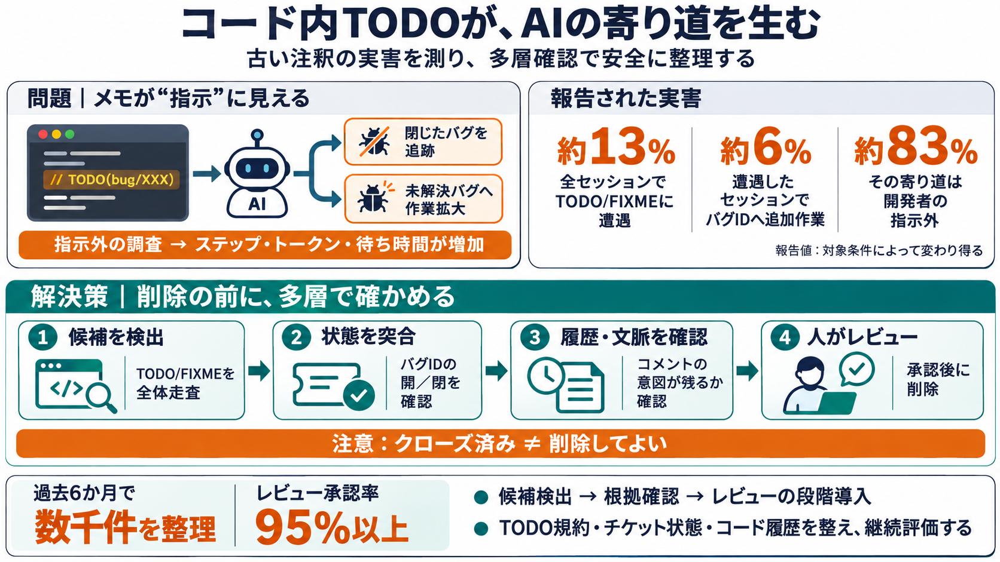

Agent Distraction - Google Developers Blog
to confirm that the TODO and the intent behind the TODO was obsolete did our agent send a change for review to delete it…

to confirm that the TODO and the intent behind the TODO was obsolete did our agent send a change for review to delete it…
The author examines how AI coding agents are frequently distracted by outdated code comments, obsolete bug references, a…
# Sam Saccone Headline: 🐐 Current role: Senior Staff Software Engineer Seniority: Senior, Engineering and Technical Loc…
| 8th | Logo for Upland Upland 2010, Austin (United States), Acquired | Provider of cloud software for marketing, sale…
JavaScript is disabled in your browser. enable it to enjoy the full features of Tracxn. Tracxn.com Android Apple Chrome…